This should be treated as a starting template only. Please tailor to your project/taste.
All content from the OpenSSF's Security-Focused Guide for AI Code Assistant Instructions and licenced under CC BY 4.0.
